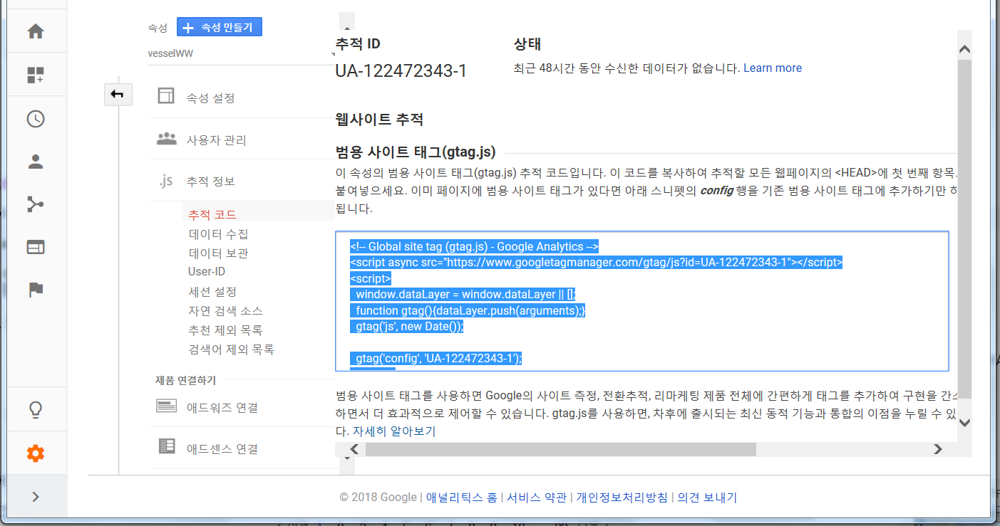

처음엔 큰 기능도 쉽게 만들어지지만 뒤로 갈수록 사소한 기능 하나를 추가하는 것도 어렵게 되면서 깊은 슬럼프에 빠지게 됩니다.
자기 탓이 아닙니다. 원래 그렇습니다.
공부를 그만두고, 즐겁게 만들면서, 한계에 스스로 직면하세요
웹사이트를 아름답게 하고 싶다면 CSS를 공부하셔야 합니다.
사용자와 상호작용하는 웹페이지를 만들고 싶다면 JavaScript를 공부하셔야 합니다.
백엔드 기술
iframe
유투브 동영상-공유-
백 앤드
스팸차단기능
LiveRe 도 추천
DISQUS : https://disqus.com/profile/login/?next=/admin/create/
로그인 & Creat a new site : web1, tech, Create Site
로그인 : web1, create, let'sget started,
Please enable JavaScript to view the comments powered by Disqus.
: 웹서버를 이용해서 웹페이지를 열어야 함.
DISQUS 댓글 문제해결 : http://lovedweb.com/81
tawk.to(https://www.tawk.to/)
로그인, 관리자, Widget Code 복사,
웹서버를 통하여 웹페이지를 열것
방문자가 글자를 입력하면 소리가 들림
관리자는 join을 눌러서 채팅에 참가함
New Account, 선택 (Website,Mobilt App),
Account Name (Web1),
Website Name (Web1)
Website URL (https://summerer1.github.io/WEB1_NOTE/)
